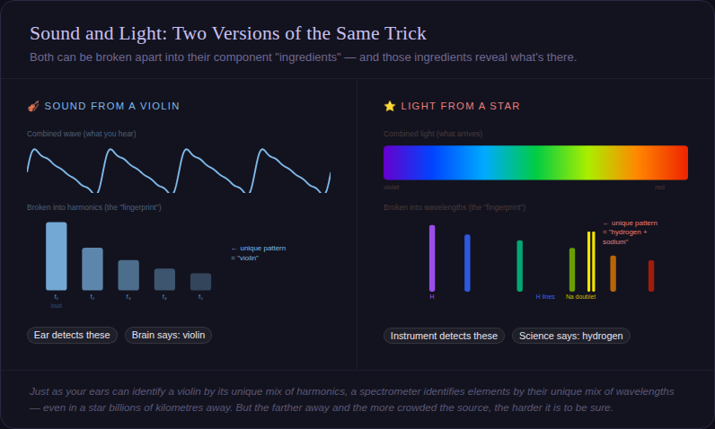

(Oops! There's that sarcasm again!)
(Oops! There's that sarcasm again!)| Sidebar - February 2011 |
| by Do-While Jones |
There are limits to what you can tell about something simply by looking at it.
The missing isotope argument depends upon more than just the notion that the isotopes on Earth should be the same as the isotopes in space. It also assumes that we really know what isotopes exist out in space.
Astronomers can't actually take samples of stars. All they can do is look at them. Astronomers measure the visible and invisible radiation coming from stars, then use a technique called "spectral analysis" to determine what elements or atomic reactions produced them.
Perhaps the best way to explain this is to use a musical analogy because harmonic analysis is fundamentally the same as spectral analysis.
Suppose I take you, blindfolded, into a concert hall. One of the musicians in the orchestra plays a single note. Then I ask you, "Did he play a violin, flute, or trumpet?" Most people would be able to tell, just by listening, which of the three instruments was played.
How can you tell instruments apart? You tell by listening to the harmonics. Musical instruments produce a primary frequency associated with a musical note, plus several other frequencies that are harmonically related to that note. Your ear detects these other harmonics, allowing you to identify the instrument.
Every element has the equivalent of visual harmonics. If you heat up a bar of metal or a tube of gas, it will glow. It glows with a combination of different colors. Human eyes aren't as sensitive to light as human ears are to sound, but you might be able to tell the orange glow of neon from the blue glow of helium. Elements with more electrons produce more different colors than elements with fewer electrons because electrons produce (or absorb) a specific color of light when changing from one orbit to another. Scientific instruments can distinguish the various element from the spectral differences in light the same way you can hear spectral differences in sound.
 |
|---|
Let's go back to the concert hall. This time, two musicians play at once. Your ear is probably good enough to tell which two instruments are playing. In the same way, if two elements are heated, the scientific instrument can tell that both elements are present.
As long as the instruments are sufficiently different, it is easy to tell them apart. It gets more difficult to tell a violin from a viola, especially if other instruments are playing at the same time. Professional string players certainly can distinguish the two, but people who don't have any musical background might find it difficult.
In the same way, the more sources of light there are, the more difficult it will be to separate them. Can spectral analysis really distinguish between nearly identical isotopes in the presence of lots of other elements from a distance of many light years?
The Apollo astronauts brought back samples of moon rocks which were analyzed using atomic mass spectrometers. In essence, the moon rocks were ground up into fine powder and separated by weight. Would it not have been much cheaper to do a spectral analysis of moonlight to find out what the Moon is made of? Yes it would; but it would not have worked. If it could have worked, they would have done it and saved a lot of money.
Furthermore, bringing back samples only told us what the surface of the Moon is made of--it didn't tell us what the interior of the Moon is made of. One certainly can't tell the composition of the Moon just by looking at it, no matter how good the instruments are.
Cosmologists would have us believe that they know (precisely) the composition of stars just by looking at them. We don't know what the Moon is made of just by looking at it. We can't even tell where all the gold is on Earth from satellite photography--that's why prospectors still have to dig looking for it. Cosmologists claim to know what stars are made of just by analyzing the radiation coming from space, but there's no way to verify their conclusions. Nobody has ever brought back samples from distant stars.
Of course, our simple musical analysis is naïve. If we all just knew as much as they knew, we would understand that they really can distinguish between two lead atoms that weigh almost the same at astronomical distances. Their instruments are so much better than our ears, that to make such a simple-minded comparison is ridiculous. So, when they tell us the ratio of isotopes in distant stars, we should just take their word for it without questioning them. To be skeptical is to be irrational and unscientific! (We are being sarcastic, in case you couldn't tell.)
Seriously, cosmology isn't rocket science. In rocket science, an engineer actually builds a rocket. If it flies, the rocket scientist was right. If he was wrong, the rocket won't reach orbit. When a cosmologist tells us how much of a particular isotope of lead there is in a particular star, there's no way to tell if he is right or not. A computer model might say he's right; but how do you know the computer model is right? Have you ever known a computer to be wrong? (Oops! There's that sarcasm again!)
Social pressure can cause people to be afraid to say things they know are true. Last month, someone in Tucson tried to assassinate a U.S. Congresswoman, killing several innocent bystanders in the process. The killer was wrestled to the ground and disarmed at the scene; but the news media had to feign doubt as to whether or not he actually did it, calling him "the suspect" or "alleged gunman." It is politically incorrect to tell the truth about criminals. Scientists are similarly pressured to say that the theory of evolution is unquestionably true, despite all the obvious evidence against it, even if they know in their hearts it is false.
Sadly, scientists have abandoned the scientific method and replaced it with consensus. Consensus can be influenced by political expedience--honest experiments can't. Consensus isn't as reliable as experimentally obtained knowledge; but the scientific elites demand consensus be given the same respect.
There may be consensus about what isotopes exist in space, but consensus is nothing more than majority opinion. It can't be verified, and may not be true.
| Quick links to | |
|---|---|
| Science Against Evolution Home Page |
Back issues of Disclosure (our newsletter) |
| Web Site of the Month |
Topical Index |